Wissen
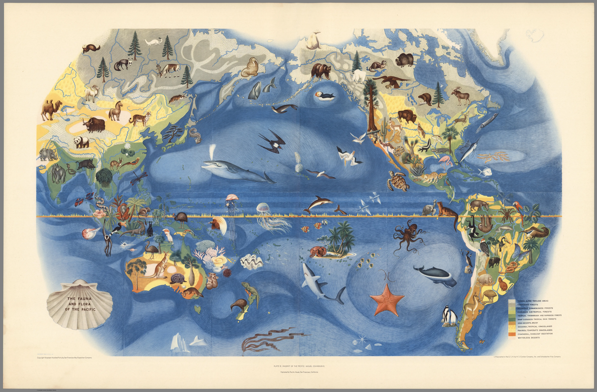
"Die Tier- und Pflanzenwelt des Pazifiks" von Miguel Covarrubias (1939). Eine der sechs Karten, die anlässlich der Weltausstellung 1939 in San Francisco für das Haus des Pazifiks angefertigt wurden.
David Rumsey Map Center Stanford University Libraries
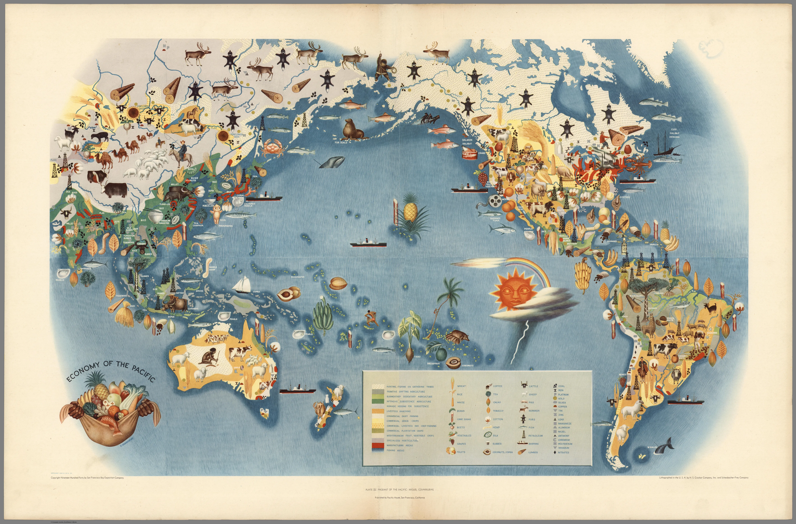
"Die Wirtschaft des Pazifiks" von Miguel Covarrubias (1939). Eine der sechs Karten, die anlässlich der Weltausstellung 1939 in San Francisco für das Haus des Pazifiks angefertigt wurden.
David Rumsey Map Center Stanford University Libraries
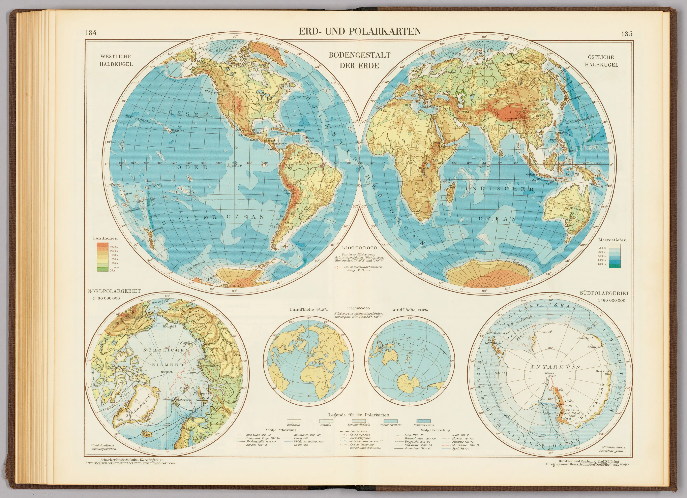
"Land- und Polkarten: Das Relief der Erde" von Eduard Imhof (1947)
David Rumsey Map Center Stanford University Libraries
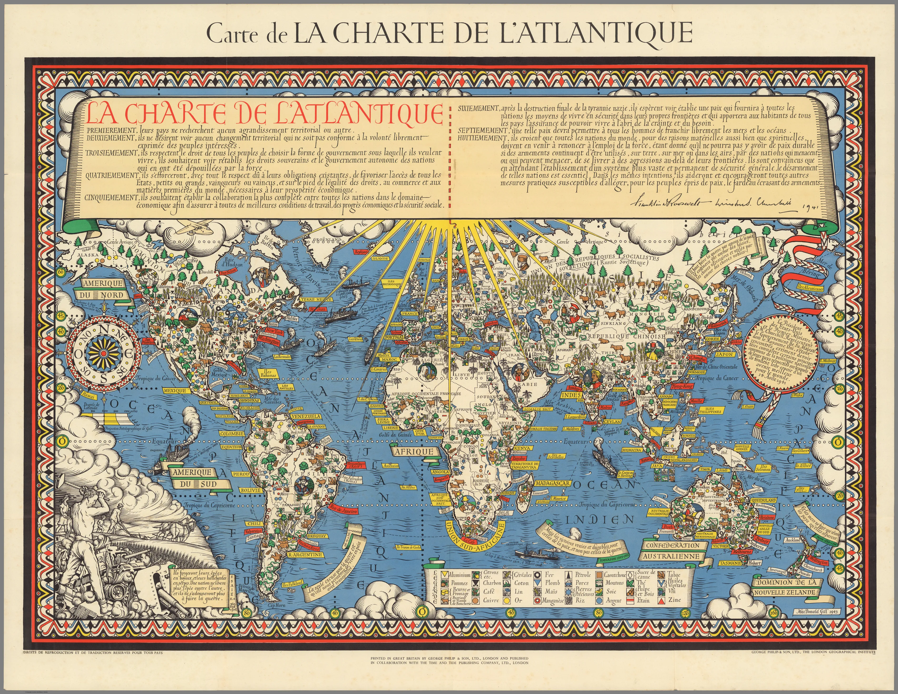
"Karte der Atlantik-Charta" von Gill Leslie MacDonald (1943)
David Rumsey Map Center Stanford University Libraries
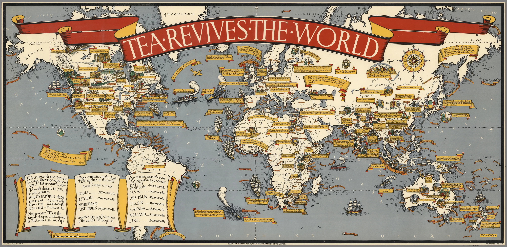
"Internationaler Teemarkt" von Gill Leslie MacDonald (1940)
David Rumsey Map Center Stanford University Libraries
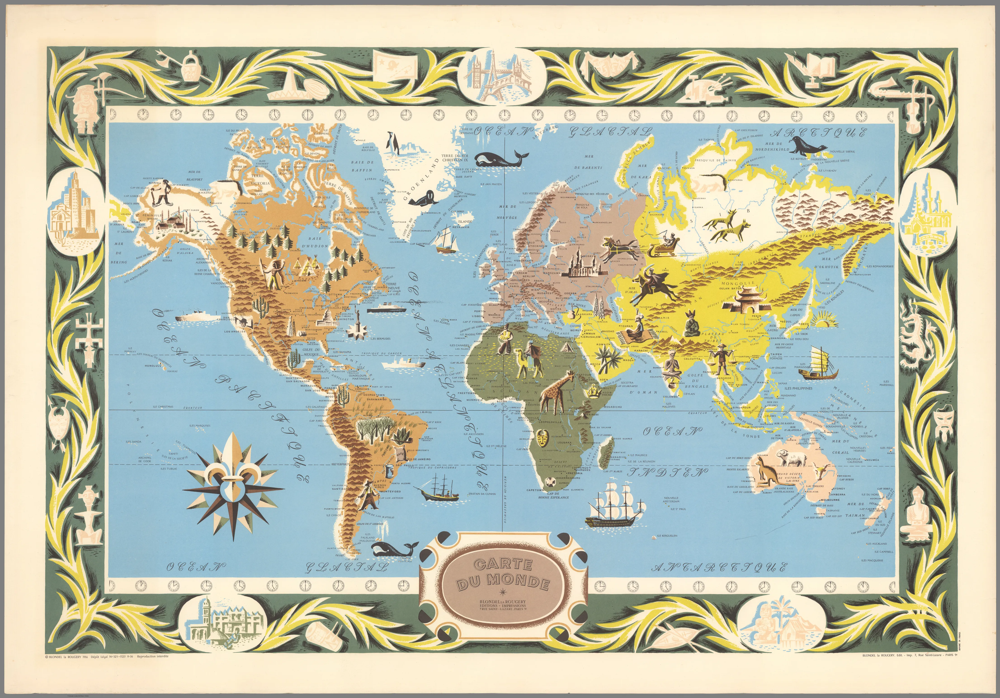
"Weltkarte" von Blondel La Rougery (1956)
David Rumsey Map Center Stanford University Libraries
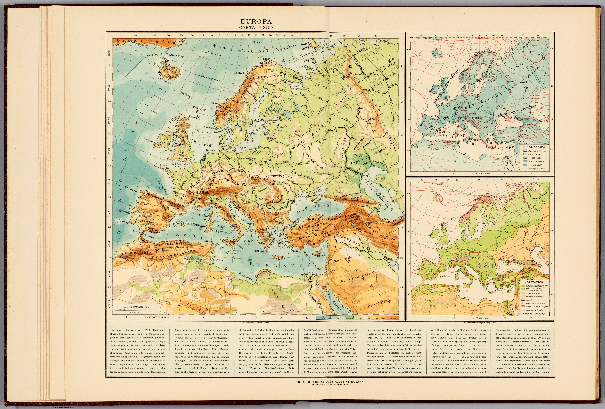
"Europa: physische Karte" von Mario Baratta (1922)
David Rumsey Map Center Stanford University Libraries
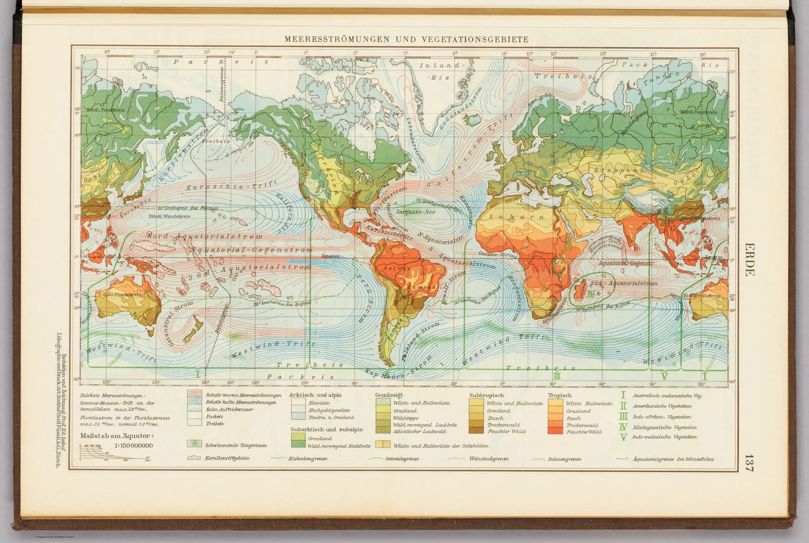
"Meeresströmungen und Vegetationszonen" von Eduard Imhof (1947)
David Rumsey Map Center Stanford University Libraries
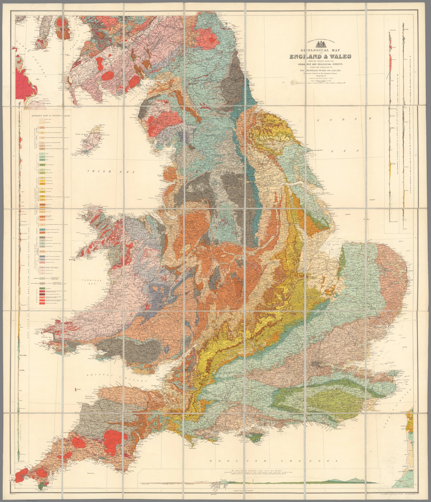
"Geologische Karte von England und Wales" von Archibald Geikie (1897)
David Rumsey Map Center Stanford University Libraries
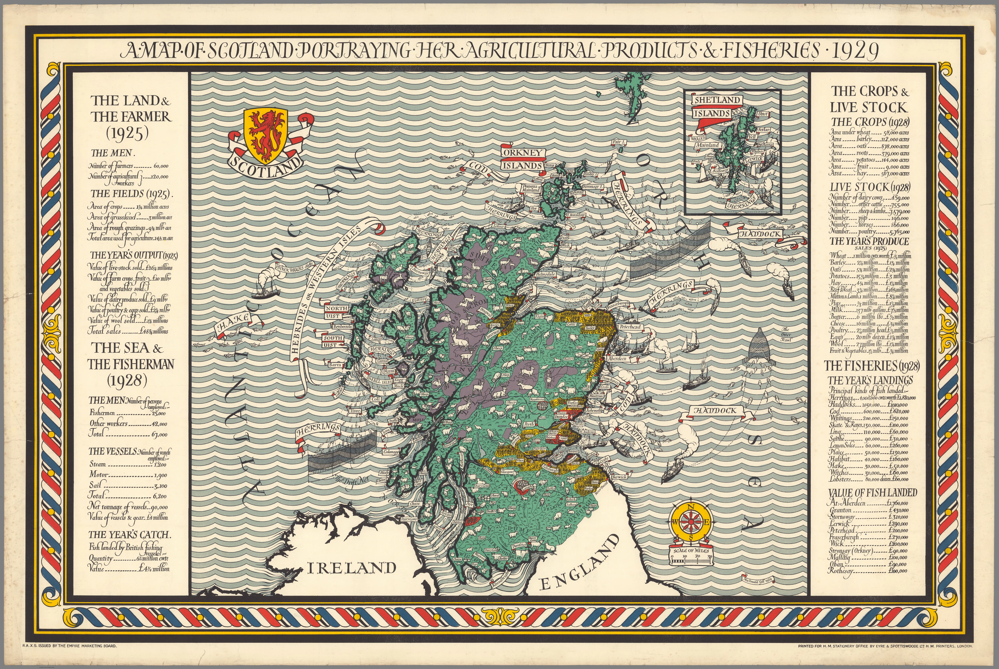
"Karte von Schottland mit einer Übersicht über die landwirtschaftlichen Erzeugnisse und Fischereiprodukte des Landes" von Gill Leslie MacDonald (1929)
David Rumsey Map Center Stanford University Libraries
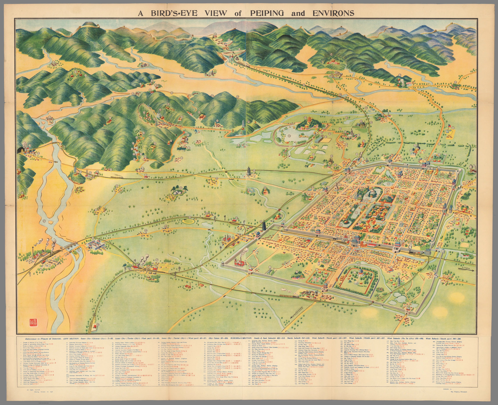
"Überblick über Peking und Umgebung" von Wang Wen-Chih (1936)
David Rumsey Map Center Stanford University Libraries
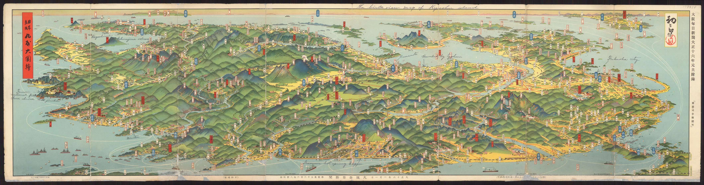
"Überblick über Kyushu" von Yoshida Hatsusaburo (1926)
David Rumsey Map Center Stanford University Libraries
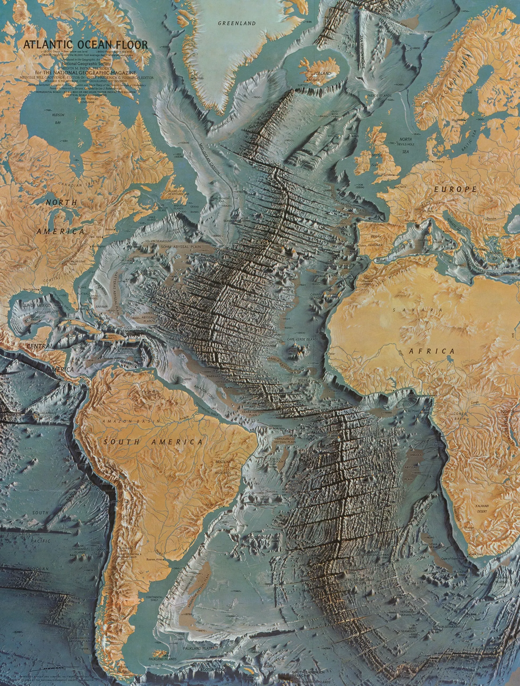
"Meeresboden des Atlantischen Ozeans" von Heinrich Berann (1968)
David Rumsey Map Center Stanford University Libraries